Heterogeneous Participating Media
Qi Ma
Updated Files
- include/nori/medium.h
- include/nori/phase.h
- include/nori/volume.h
- include/nori/common.h
- include/nori/object.h
- include/nori/scene.h
- include/nori/shape.h
- include/nori/scene.cpp
- src/parser.cpp
- src/homogeneous.cpp
- src/heterogeneous.cpp
- src/isotropic.cpp
- src/henyey_greenstein.cpp
- src/vol_path_mis.cpp
- src/transparent.cpp
- src/vdb_volume_nano.cpp
This feature includes both homogeneous (15 points) and heterogeneous (15 points) participating media. It also serves as the basis for:
- Henyey-Greenstein phase function (5 points).
- Different distance sampling and transmittance estimation methods (10 points).
We will first present our implementation of homogeneous and heterogeneous participating media, followed by validation results for both. The implementation of the anisotropic phase function (Henyey-Greenstein) and different distance sampling/transmittance estimation methods (ray marching, delta tracking, ratio tracking) will be shown in the next section.
Implementation
We followed the PBRT approach and created the following classes:
MediumClass: Samples a new free path inside the medium and evaluates the transmittance along the path.PhaseFunctionClass: Samples a new direction for the scattering event and evaluates the phase function value for given directions.HomogeneousMediumClass: Inherits from theMediumclass and implements homogeneous participating media with constant density.HeterogeneousMediumClass: Inherits from theMediumclass and implements heterogeneous participating media with grid-based density.VolumeClass: Handles the grid-based density of the heterogeneous medium.MediumShapeClass: Allows rendering of the medium within a shape.VolPathMISIntegratorClass: Handles sampling and evaluation of participating media.
Medium Class
Following the PBRT implementation, the Medium class has two pure virtual methods: sample and Tr.
sample: Used to sample a new free path inside the medium.Tr: Used to evaluate the transmittance along the path.
For homogeneous media, we use the delta tracking algorithm instead of Beer's law to align with Mitsuba's results. For heterogeneous media, we support three distance sampling and transmittance estimation methods: ray marching, delta tracking, and ratio tracking. Detailed implementations will be covered in the next section.
Key parameters:
- \(\sigma_a\): Absorption coefficient.
- \(\sigma_s\): Scattering coefficient.
- \(\sigma_t\): Attenuation coefficient (\(\sigma_t\) = \(\sigma_a\) + \(\sigma_s\)).
- albedo: Ratio of \(\sigma_s\) to \(\sigma_t\).
Volume Class and NanoVDB
The homogeneous medium has uniform density throughout, specified in the scene file. In contrast, the heterogeneous medium has varying densities across regions. We introduced a VDBVolume class to handle grid-based density, which can:
- Load density data from nvdb files (NanoVDB format).
- Query the density at a specified position.
Although most density files use the vdb format, they can be converted to nvdb using NanoVDB tools. NanoVDB is a lightweight version of OpenVDB, designed for efficient storage and retrieval of heterogeneous density data.
Medium in Shapes
To support mediums within shapes, we added the MediumShape class. This class:
- Defines a bounding box for the medium within the shape.
- Maps the shape's bounding box to the nvdb file's bounding box for density queries.
Volumetric Path Tracing
The VolPathMISIntegrator class, derived from the PathMISIntegrator class, was modified to support participating media.
In the Li method, we first randomly select a medium and sample a new path.
If this ray intersects with the medium, we randomly choose a light source and check its visibility from the intersection point. If visible, we calculate the contribution of the light source, considering the transmittance along the path. Then, we use the phase function to sample a new ray, check for intersections with the light source, and update w_mat. If the ray doesn't intersect with any medium, the process is similar to the original PathMISIntegrator,
except we also consider the medium transmittance along the path.
Validation
Homogeneous Medium
We compare our homogeneous medium implementation with Mitsuba. First, we evaluate two extreme cases: full absorption (albedo = 0) and full scattering (albedo = 1).
 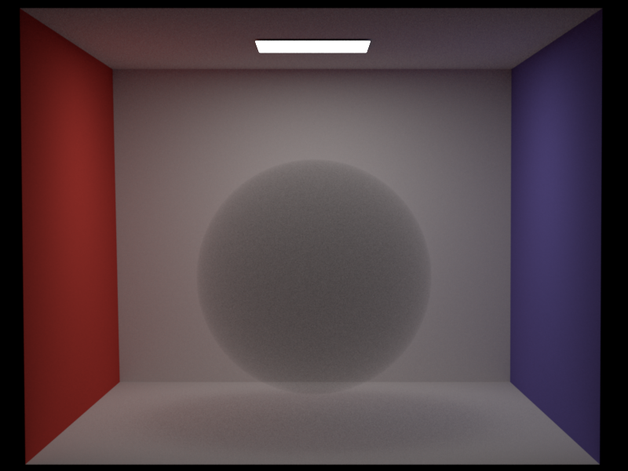
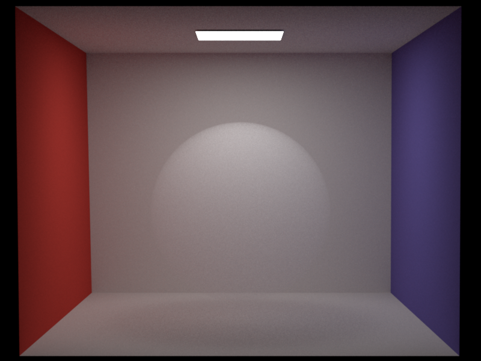
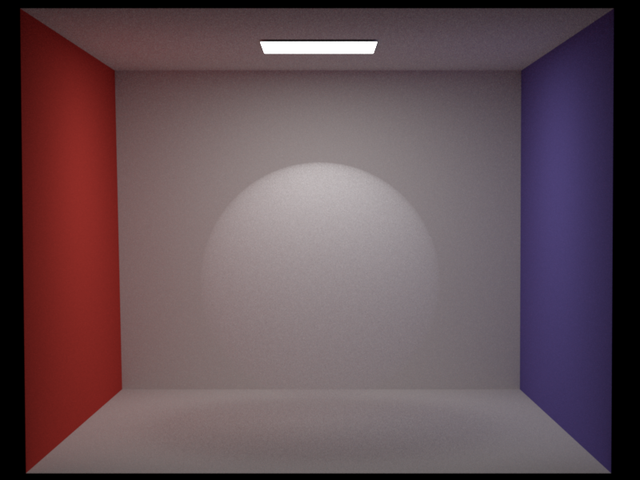
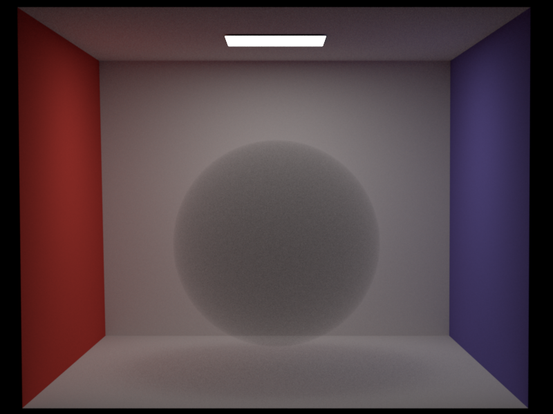
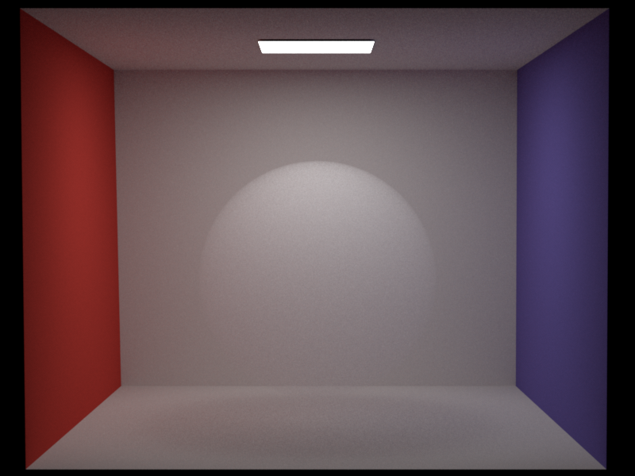
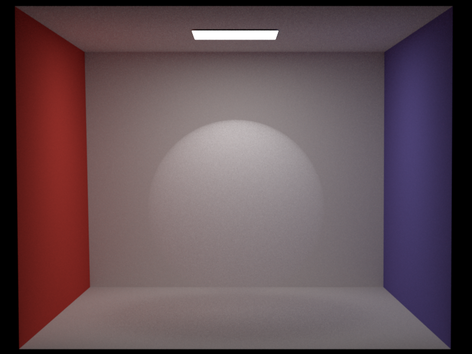
Next, we compare homogeneous medium results within different shapes (cube and sphere) and with various colors (uniform and non-uniform radiance).
- Cube parameters:
- \(\sigma_a\): (2.0825, 1.6675, 1.25)
- \(\sigma_s\): (0.4175, 0.8325, 1.25)
- \(\sigma_t\): (2.5, 2.5, 2.5)
- Albedo: (0.167, 0.333, 0.5)
- Sphere parameters:
- \(\sigma_a\): (2, 2, 2)
- \(\sigma_s\): (0.5, 0.5, 0.5)
- \(\sigma_t\): (2.5, 2.5, 2.5)
- Albedo: (0.2, 0.2, 0.2)

Heterogeneous Medium
We utilize .nvdb grid density files, which are compatible with PBRT-v4. Mitsuba, however, uses .vol files. Despite attempting to convert .nvdb or .vdb files to .vol using the Mitsuba2 VDB Converter, we encountered issues. Therefore, we validate our heterogeneous medium implementation by comparing it with PBRT-v4.
We start with the Bunny Cloud .nvdb file from PBRT-v4 Scenes, placing it inside a Cornell Box. The original parameter settings are:
- \(\sigma_a\): 0.5
- \(\sigma_s\): 10.0
PBRT-v4 specifies wavelength-specific values, while our implementation assumes uniform (\(\sigma_a\)) and (\(\sigma_s\)) for all wavelengths.
"spectrum \(\sigma_s\)" [200 10 900 10] "spectrum \(\sigma_a\)" [200 .5 900 .5]
Below are results comparing PBRT-v4, our Henyey-Greenstein (g=0.5), and isotropic phase functions. All images are rendered with 128 SPP and independent sampling.


Our Henyey-Greenstein results are close to PBRT-v4's output and can show more details of the cloud. Slight color differences may arise from PBRT's use of the null-scattering path integral formulation from Miller et al.. Besides, we do not know how pbrt-v4 will dicide the g factor of Henyey-Greenstein, so we just use g=0.5, which will cause some difference. But our results have shown our implementation's ability to dipict the detailed shape and density of the bunny cloud.
Then we show our results under full scattering and full absorption cases.

Then we show our ability to render the medium within a shape, which can auto-scale the medium to fit the bounding box of the shape and can be placed at the specified position and rotation. Below three images are a scaled/rotated/re-positioned box with the bunny cloud medium. The bunny cloud medium is auto-transformed to fit the bounding box of the box shape.
 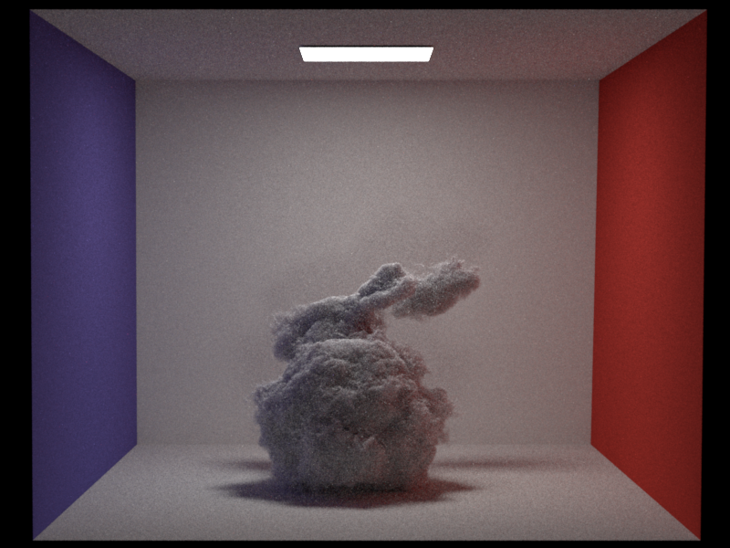
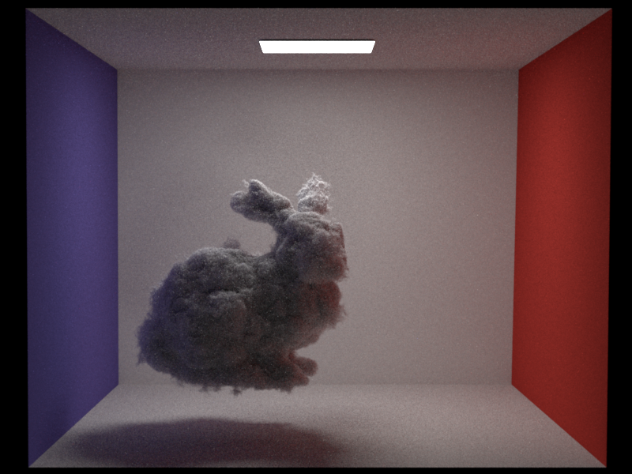
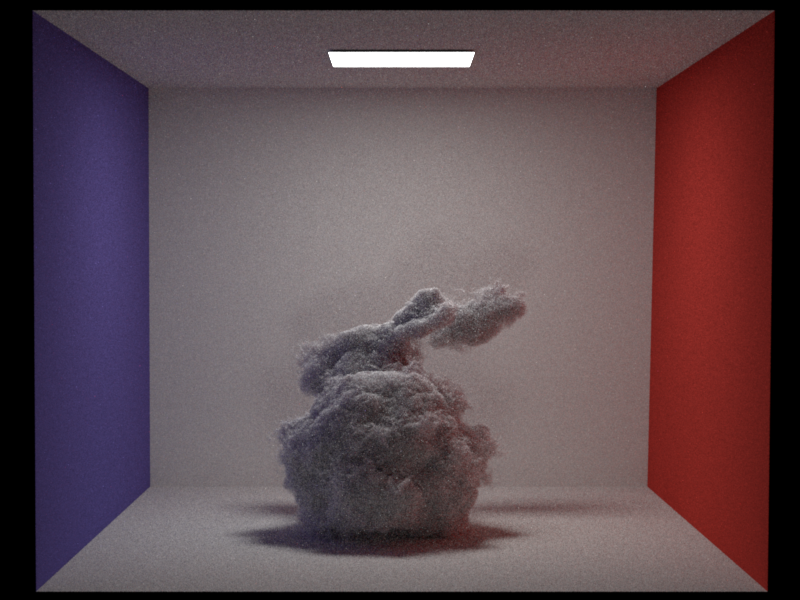
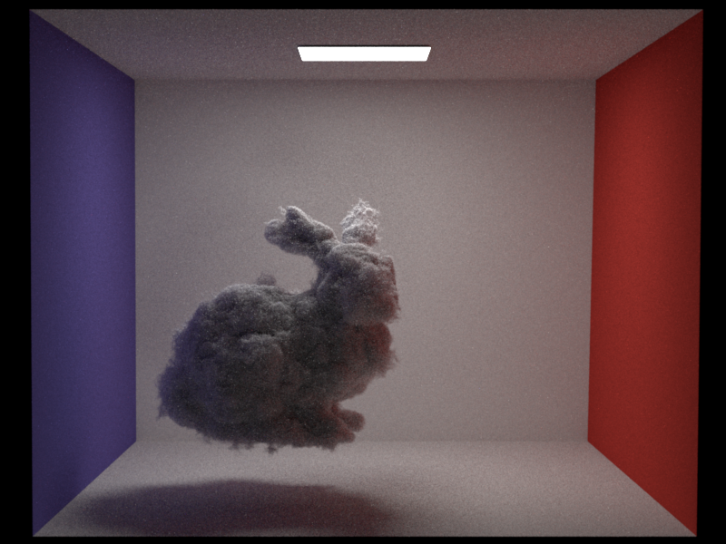
To show our ability to render the medium in different shapes, we use a sphere shape to hold the bunny cloud medium. The medium ourside the sphere will not be rendered.
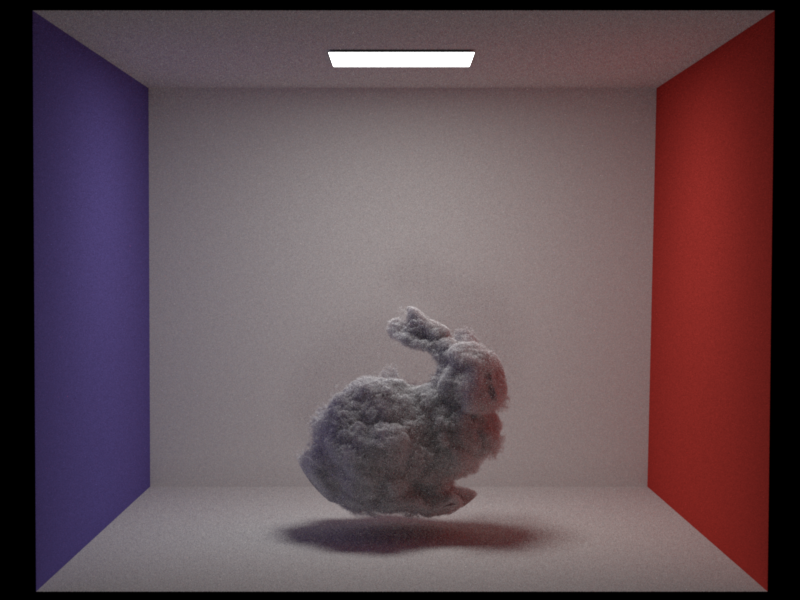

Then we show our results with different colors.


Conclusion
From the validation results, we can conclude that our implementation of homogeneous and heterogeneous participating media is consistent with the reference images generated by Mitsuba and PBRT-v4. Our implementation supports rendering within shapes and using different colors. The Henyey-Greenstein phase function and different distance sampling/transmittance estimation methods will be validated in the next section.